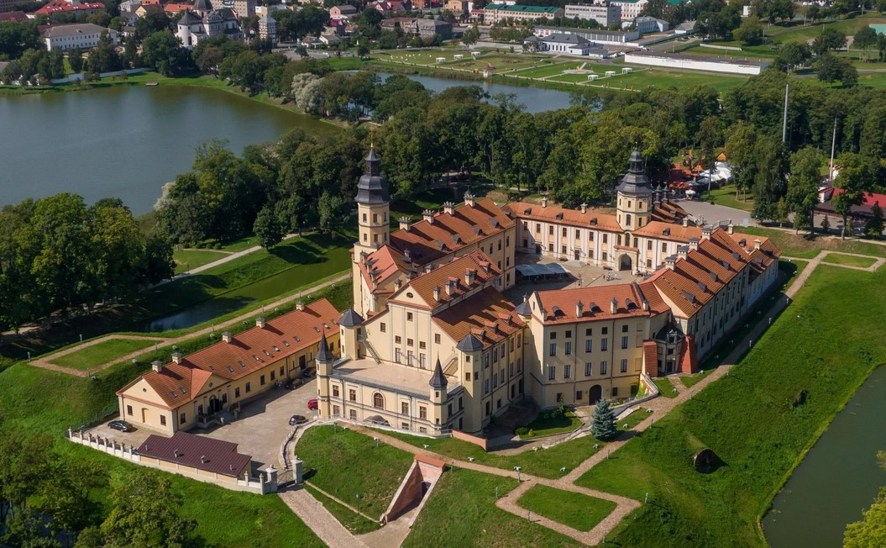

Не́свижский за́мок — дворцово-замковый комплекс, находящийся в северо-восточной части города Несвижа в Минской области Беларуси, памятник архитектуры XVI—XVIII веков. Заложен князем Н. Х. Радзивиллом Сироткой в 1582 году и работы, в основном, были окончены к 1600 г. Вначале (до 1599 г.) в строительстве замка участвовал итальянский архитектор Джованни Бернардони. В XVI—XX вв. — резиденция князей Радзивиллов. Включает в себя собственно замок, замковые укрепления, а также большой ландшафтно-пейзажный парк.
Несвижский замок был построен на полуострове, на правом берегу реки Уши. Замок в плане имел четырёхугольную форму, размерами 170×120 м, был окружён глиняным валом с бастионами по углам, сухим оборонительным рвом, гласисом (укреплённой дорогой) по внешнему периметру рва и равелином перед входом на замковый мост.
Замок был окружён широким рвом, который сначала был сухим, а после начал заполняться водой. Уровень воды во рву регулировался. Замок был фактически островным, с двумя водными рубежами. Попасть в замок можно было по длинному деревянному мосту через озеро. В случае опасности мост легко разбирался. Этот мост достигал оборонительного рва с переброшенным через него подъёмным мостом. Также перед входом на замковый мост существовал земляной редут, отделённый от остальной территории рвом шириной до 8 м и глубиной 2 м.
Ров вокруг замка был обложен с двух сторон кирпичной стеной высотой до 4 м и толщиной до 2 м. Ширина рва около бастионов достигала 22 м. Вал возвышался над уровнем боевой площадки на 7 м и имел ширину около подошвы до 20 м. На него можно было попасть по пандусам, которые выводили с замкового подворья на восточный, южный и западный бастионы. От северного бастиона вёл специальный проход к дому городничего. Пандус с замкового двора около въездных ворот имел ширину около 3 м. Перед валом находилась боевая площадка шириной до 4,5 м прикрытая каменным бруствером с бойницами. ниже находились орельоны полукруглой формы диаметром до 4 м с бойницами для пушек. Выход на боевую площадку перед валом осуществлялся через проход у въездных ворот и через ворота у восточного бастиона замка.
Один из подземных ходов шёл от восточного бастиона замка к так называемому «дому пушкаря» (размещавшемуся в западной части замкового подворья и имел длину около 25 м, ширину 1,3 м и высоту 2,3 м). В центральной части подземного хода сохранилась шахта размерами 1,3×1,3 м, ведшая к западному бастиону замка. В системе обороны замка существовал подземный ход (длина 42 м, ширина 1,3 м, высота 1,6—2,3 м) из замкового двора в оборонительный ров. Одновременно в этот подземный ход из замкового двора вёл каменный канал ливневой канализации шириной 0,9 м и высотой 0,6 м. Ещё один такой канал размерами 0,4×0,6 м вёл из замкового подворья в ров под северо-западной галереей XVIII века. В XVIII в. на бастионах возвели 4 оборонительные.
Сам дворец представлял собой почти квадратную в плане, размером около 25×23 м трёхэтажную постройку, по углам которой стояли восьмигранные башни с бойницами. Вдоль длинных сторон постройки размещались прямоугольные ризалиты размером 7×5,5 м. Их фундаменты были найдены во время археологических исследований, но на проектном плане ризалитов ещё нет. Вход в замок был организован в виде парадного крыльца с двумя лестницами, ведшими на второй этаж ризалита, размещённого на фасаде дворца, откуда открывался вход в сами княжеские покои.
После распада СССР в комплексе находился санаторий «Белмежколхозздравницы», закрытый в 2001 году, после чего дворец был передан под опеку Министерства культуры Беларуси для проведения во дворце реставрации. Состояние большинства помещений замка характеризовалось как аварийное. В ужасном состоянии были фундаменты часовой башни, закрытой для посещения, подвалов и подземелий. Однако в первые годы реставрационные работы шли очень медленно, ограничивались только некоторыми натурными исследованиями, а работы имели характер противоаварийных.
Только после пожара в 2002 году начались работы по реставрации дворца, которые полностью завершились в 2012 году.
Архитектурный ансамбль Несвижского замка в настоящее время представляет собой историко-культурный музей-заповедник. С 2005 года вместе с расположенным в стороне Фарным костёлом внесён во Всемирное наследие ЮНЕСКО.